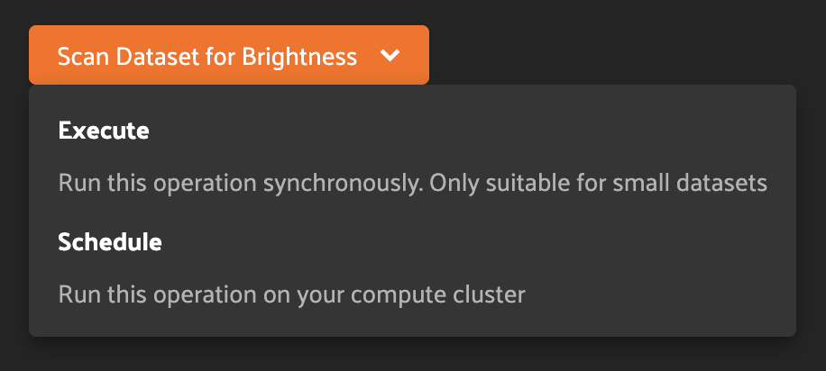
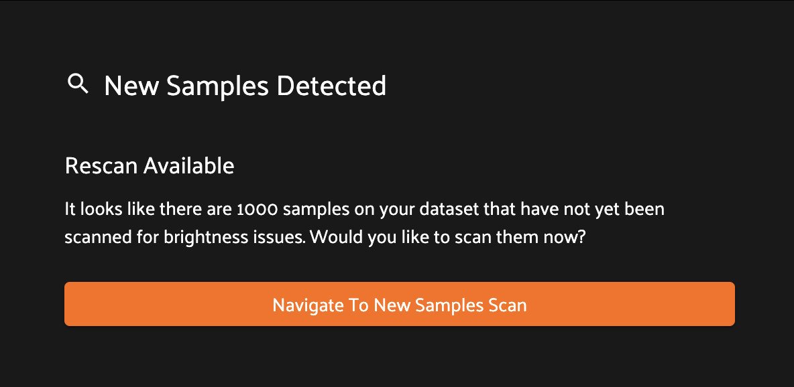

Data Quality¶
Available in FiftyOne Teams v2.2+
The Data Quality panel is a builtin feature of the FiftyOne Teams App that automatically scans your dataset for common quality issues and helps you explore and take action to resolve them.
Data Quality panel¶
You can open the Data Quality panel by clicking the “+” icon next to the Samples tab.
The panel’s home page shows a list of the available issue types and their current analysis/review status:
Brightness: scans for images that are unusually bright or dim
Blurriness: scans for images that are abnormally blurry or sharp
Aspect Ratio: scans for images that have extreme aspect ratios
Entropy: scans for images that have unusually small or large entropy
Near Duplicates: leverages embeddings to scan for near-duplicate samples in your dataset
Exact Duplicates: uses filehashes to scan your dataset for duplicate data with either the same or different filenames
Click on the right arrow of an issue type’s card to open its expanded view.

Scanning for issues¶
If you have not yet scanned a dataset for a given issue type, you’ll see a landing page like this:

Clicking the “Scan Dataset” button presents two choices for execution:
Note
The “Execute” option is only for testing. In this mode, computation is performend synchronously and will timeout if it does not complete within a few minutes.
Choose “Schedule” for all production data, which schedules the scan for delegated execution on your compute cluster.
While a scan is in-progress, you’ll see a status page like this:
Click the link in the notification to navigate to the dataset’s Runs page where you can monitor the status of the task.
Analyzing scan results¶
Once an issue scan is complete, its card will update to display an interactive histogram that you can use to analyze the findings:

Note
When analyzing issue scan results, we recommend using the split screen icon to the right of the Samples panel tab to arrange the Samples panel and Data Quality panel side-by-side, as shown above.
Each issue type’s results are stored under a dedicated field of the dataset, from which the displayed histograms are generated:
Brightness: the brightness of each image is stored in a
brightnessfield of the sampleBlurriness: the blurriness of each image is stored in a
blurrinessfield of the sampleAspect Ratio: the aspect ratio of each image is stored in an
aspect_ratiofield of the sampleEntropy: the entropy of each image is stored in an
entropyfield of the sampleNear Duplicates: the nearest neighbor distance of each sample is stored in a
nearest_neighborfield of the sampleExact Duplicates: the filehash of each image is stored in a
filehashfield of the sample
Each issue type comes with a default threshold range that highlights potential issues in your dataset. If issues are identified, the number of potential issues will be displayed in the top-left corner of the Data Quality panel and the Samples panel will automatically update to show the corresponding samples in the grid.
You can also use the threshold slider to manually explore different threshold ranges. When you release the slider, the Samples panel will automatically update to show the corresponding samples:

If you find a better threshold for a dataset, you can save it via the “Save Threshold” option under the settings menu. You can use “Reset Threshold” to the revert to the default threshold at any time.
Once you’ve reviewed the potential issues in the grid, you can use the “Add Tags” button to take action on them. Clicking the button will display a modal like this:

Note
If you’ve selected samples in the grid, only those samples will be tagged. Otherwise, tags will be added to all samples in your current view (i.e., all potential issues).
You can use the “sample tags” filter in the App’s sidebar to retrieve, review, and act on all samples that you’ve previously tagged.
The review status indicator in the top-right corner of the panel indicates whether an issue type is currently “In Review” or “Reviewed”. You can click on it at any time to toggle the review status.
If you navigate away from an issue type that is currently “In Review”, you’ll be prompted to indicate whether or not you’d like to mark the issue type as “Reviewed”:

Updating a scan¶
The Data Quality panel gracefully adapts to changes in your datasets after scans have been performed.
If you delete samples from a dataset, the histograms of any existing scans will automatically be updated to reflect the new distribution.
If you add new samples to a dataset or clear some existing field values
associated with a scan (e.g., brightness field values for brightness scans),
the panel will automatically detect the presence of unscanned samples and will
display contextual information from the home page
and analysis page:
To update an existing scan, open the issue type and click the “Scan New Samples” button in the bottom-right corner of the analysis page. This will open a modal that provides additional context and prompts you to initiate the new samples scan:
Deleting a scan¶
You can delete an issue scan by simply deleting the corresponding field from
the dataset (e.g., brightness for brightness scans).
Note
Did you know? You can delete sample fields from the App using the
delete_sample_field operator available via the
Operator browser.